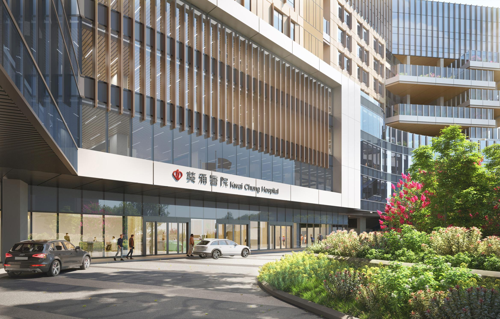
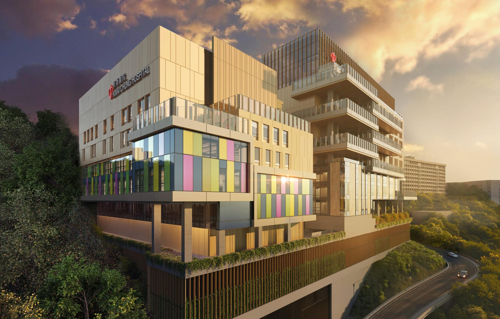

關於中環
香港的金融與商業樞紐
中環（英語：Central），又稱中區，是香港的中央商業區，位於香港島北岸，對面是九龍半島的尖沙咀。這裡是香港最繁華的地區之一，集中了眾多國際金融機構、銀行總部和商業辦公大樓。
中環是香港金融業的中心，許多跨國公司在此設立地區總部，包括香港交易所、匯豐銀行、恒生銀行和中國銀行等。這裡的摩天大樓形成了香港著名的天際線，是全球最具代表性的金融區之一。
除了現代化的商業大廈外，中環還保留了許多殖民時期的歷史建築，展示了香港獨特的東西方融合文化。從維多利亞時代的法院大樓到現代化的國際金融中心，中環體現了香港的發展歷程和多元文化。


中環歷史
從維多利亞城到國際金融中心
殖民地創立
1841年，香港殖民地成立，現在被稱為「中環」的地區當時被命名為「維多利亞城」。這一地區最初被選為城市主要軍事設施和行政中心的所在地。
商業中心形成
19世紀末，中環已經發展成為香港的商業和金融中心。這一時期，許多歐洲風格的建築物在該地區建成，包括標誌性的終審法院大樓（前立法會大樓）。
現代化轉型
20世紀60年代，香港經濟快速發展，中環開始了現代化轉型。許多舊建築被拆除，取而代之的是現代化的辦公大樓，標誌著香港從傳統殖民地向國際金融中心的轉變。
匯豐銀行總部落成
1979年，設計前衛的匯豐銀行總部大樓在中環落成，由著名建築師諾曼·福斯特設計，成為香港天際線的標誌性建築之一，也是當時全球最昂貴的建築物之一。
國際金融中心二期落成
2003年，高達415.8米的國際金融中心二期（IFC II）建成，成為當時香港最高的建築物，進一步鞏固了中環作為亞洲金融中心的地位。
大館開幕
2018年，位於中環的前中區警署建築群經過修復後，變身為大館文化藝術中心。這個項目由瑞士建築師赫爾佐格和德梅隆設計，是香港最大的歷史建築保育項目。
標誌性建築
塑造香港天際線的經典建築
國際金融中心
建成年份: 2003年 | 高度: 415.8米
國際金融中心是香港的地標性建築，由兩座摩天大樓組成，二期大樓曾是香港最高的建築物。該綜合體包含辦公空間、高級購物中心和四季酒店。
匯豐銀行總部
建成年份: 1985年 | 高度: 180米
由諾曼·福斯特設計的匯豐銀行總部是香港最具代表性的建築之一，其獨特的高科技外觀和模組化結構設計在當時領先全球建築潮流。
中銀大廈
建成年份: 1990年 | 高度: 367.4米
由華裔建築師貝聿銘設計的中銀大廈是香港天際線的重要組成部分，其獨特的幾何外形和對稱設計被視為現代建築的傑作。
長江中心
建成年份: 1999年 | 高度: 283米
長江中心是香港首富李嘉誠旗下長江實業的總部，這座現代化的辦公大樓以其優雅的外觀和先進的設施成為中環商業區的重要地標。
大館
建成年份: 1864年 | 翻新: 2018年
大館前身是中區警署建築群，經過精心修復後變成了藝術文化中心，結合了歷史建築和現代設計，是香港最大的歷史建築保育項目。
交易廣場
建成年份: 1985年 | 高度: 218米
交易廣場是香港交易所的所在地，由四座辦公大樓組成，是香港金融業的核心所在，每天數十億美元的交易在此進行。
中環要點
了解亞洲金融中心的核心數據
金融中心
中環是香港的金融中心，全球70多家銀行和許多跨國公司的總部或亞太區總部都設在這裡，是亞洲最重要的金融區之一。
摩天大樓
中環擁有超過35棟高度超過150米的摩天大樓，形成了香港著名的天際線，是全球摩天大樓密度最高的地區之一。
經濟貢獻
中環商業區對香港GDP的貢獻超過40%，每天產生的經濟活動價值超過100億港元，是香港經濟的引擎。
歷史傳承
中環保留了多個殖民時期的歷史建築，包括前立法會大樓、聖約翰教堂和大館，展示了香港獨特的文化遺產。
交通樞紐
中環是香港的交通中心，匯集港鐵、電車、巴士、渡輪和中環至半山自動扶梯等多種交通工具，每天人流超過200萬。
商業與生活
除了辦公大樓，中環還擁有豐富的購物、餐飲和娛樂設施，蘭桂坊和蘇豪區是著名的餐飲娛樂區，展示了中環的多元化面貌。
中環城市模型
探索香港商業中心區的建築
探索我們在中環的專案
峰盛工程有限公司在香港中環地區擁有豐富的工程經驗，我們曾參與多個標誌性建築的建設和維護。聯繫我們，了解更多關於我們如何為您的中環項目提供專業服務。